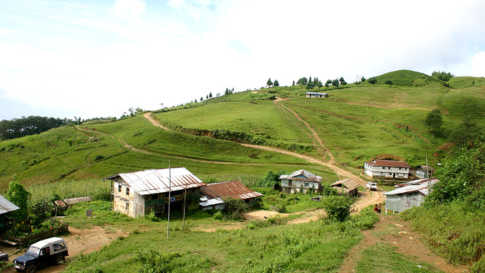
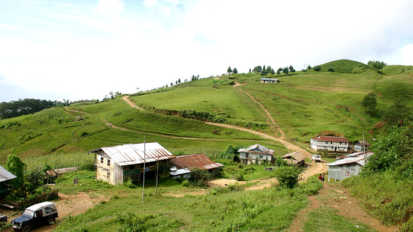

ILAM
Walk in the tea gardens, enjoy sightseeing, take short treksor trudge into the nearby woods.
A brisk walk in a tea garden, tranquil picnic and sightseeing stops, short treks along gentle slopes, or a trudge into the nearby woods – all this and more is offered by Ilam. An excellent getaway from city life, Ilam, famous for its tea, is a small hill town with pristine landscapes of sloped tea gardens, mountain streams, dense natural forests, holy sites and a unique culture. Using Ilam Bazaar as a base you can take excursions for a day or more.
While the subtropical climate of Ilam ensures good weather throughout the year, the best time to visit Ilam is between October-December or from April-February.Ilam district is bordered by Panchthar in the north, Jhapa in the south, West Bengal (India) in the east and Morang and Dhankuta districts in the west. It lies to the south of the Mahabharat range and west of the Shinghalila range.
Elevations in Ilam district range between 140 m to 3,636 m above sea level. Ilam is sometimes called Charkhol (area of four rivers) because of the four main rivers - the Jogmai, Puwamai, Mai, and Deaumai in the district. Ilam is one of the richest districts in Nepal in terms of its cultural diversity, natural landscape, and flourishing cash crops sector. Potato, cardamom, ginger, red round chilly, milk, and broom grass are the major cash crops. Visitors also go to Ilam for botanical and anthropological research.
 The main ethnic groups living in Ilam are the Brahmins and Chhetris. Lepcha is also the predominant ethnic group in this region. A Lepcha museum is at an initial stage in Antu and is in the process of being extended.Ilam reflects rich social and cultural heritages of people living in harmony. Other major ethnic groups living in Ilam include Magars, Gurungs, Rais, Limbus, and Sherpas. Most parts of Ilam are hilly regions with farmers as main inhabitants along with some businessmen, officials and government employees.
While the subtropical climate of Ilam ensures good weather throughout the year, the best time to visit Ilam is between October-December or from April-February.Ilam district is bordered by Panchthar in the north, Jhapa in the south, West Bengal (India) in the east and Morang and Dhankuta districts in the west. It lies to the south of the Mahabharat range and west of the Shinghalila range.
Elevations in Ilam district range between 140 m to 3,636 m above sea level. Ilam is sometimes called Charkhol (area of four rivers) because of the four main rivers - the Jogmai, Puwamai, Mai, and Deaumai in the district. Ilam is one of the richest districts in Nepal in terms of its cultural diversity, natural landscape, and flourishing cash crops sector. Potato, cardamom, ginger, red round chilly, milk, and broom grass are the major cash crops. Visitors also go to Ilam for botanical and anthropological research.
 The main ethnic groups living in Ilam are the Brahmins and Chhetris. Lepcha is also the predominant ethnic group in this region. A Lepcha museum is at an initial stage in Antu and is in the process of being extended.Ilam reflects rich social and cultural heritages of people living in harmony. Other major ethnic groups living in Ilam include Magars, Gurungs, Rais, Limbus, and Sherpas. Most parts of Ilam are hilly regions with farmers as main inhabitants along with some businessmen, officials and government employees.